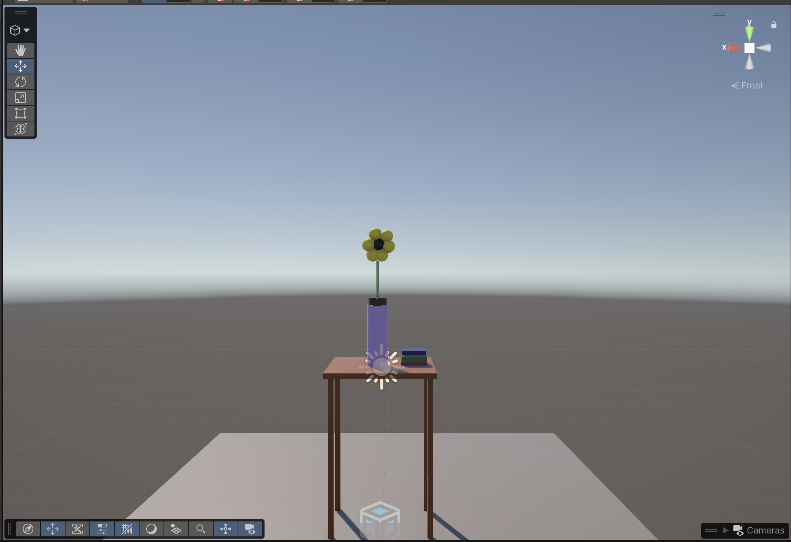

When I was working on this assignment, I decided to illustrate my bedside table with a pot of my weekly sunflowers and some of my favorite reads of the month (Current reading Yellowface by RF Kuang and love it).
For this scene, I used several basic 3D primitives. I started with a plane to act as the floor, giving me a surface to place objects on. To build the table, I used cubes for both the legs and the tabletop, adjusting the scale and position under the Inspector column until I got the shape I wanted. For the flower, I used a cylinder as the vase, then scaled it down to also form the stem. Finally, I used spheres for each individual petal of the sunflower. I added color to my scene through materials! Each different color is its own material within Unity.
Working with Unity was a struggle to say the least... I've had previous experience with MATLAB from other classes, so I assumed Unity would be easy to work with, but boy was I wrong. It was an adjustment and I had to watch A ALOTT of youtube tutorials to understand how to move and scale different objects in Scene View. Additionally, there were so many times where I would move my mouse, zoom wayy to far in the scene view to where I couldn't even find my table originally. Trying to reset my scene was my worst nightmare.
I'm excited to continue my love/hate relationship with Unity throughout the semester I think with more practice (and yelling at my screen), I'll know the tricks within Unity, and get to explore more of the framework that involves building full-life 3D simulations. I can't wait to add motion within Unity, and start coding in C##.